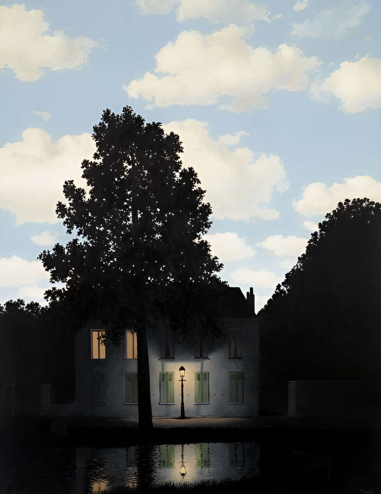
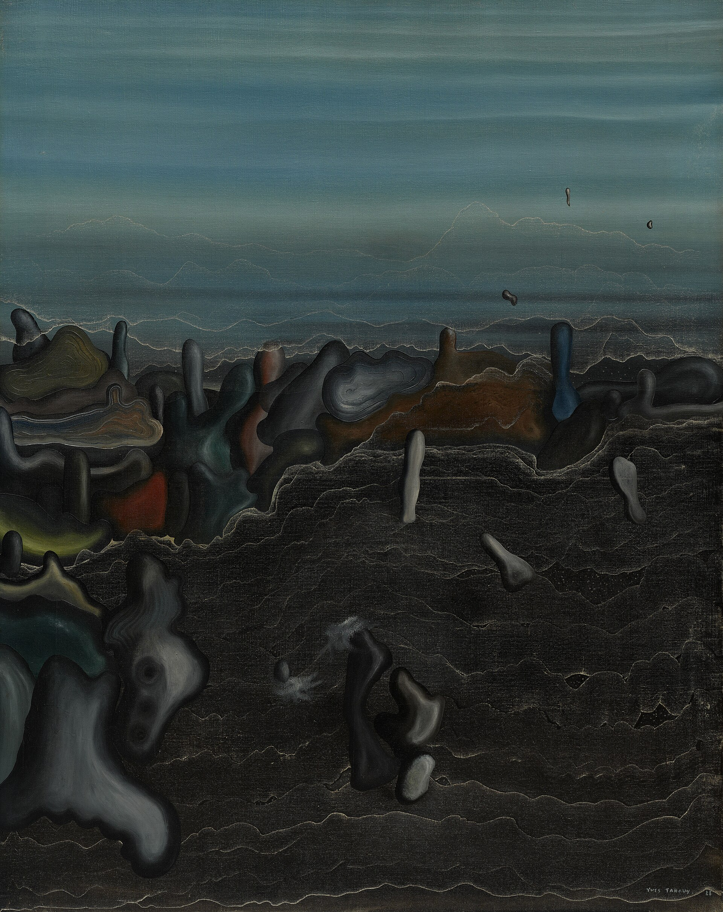
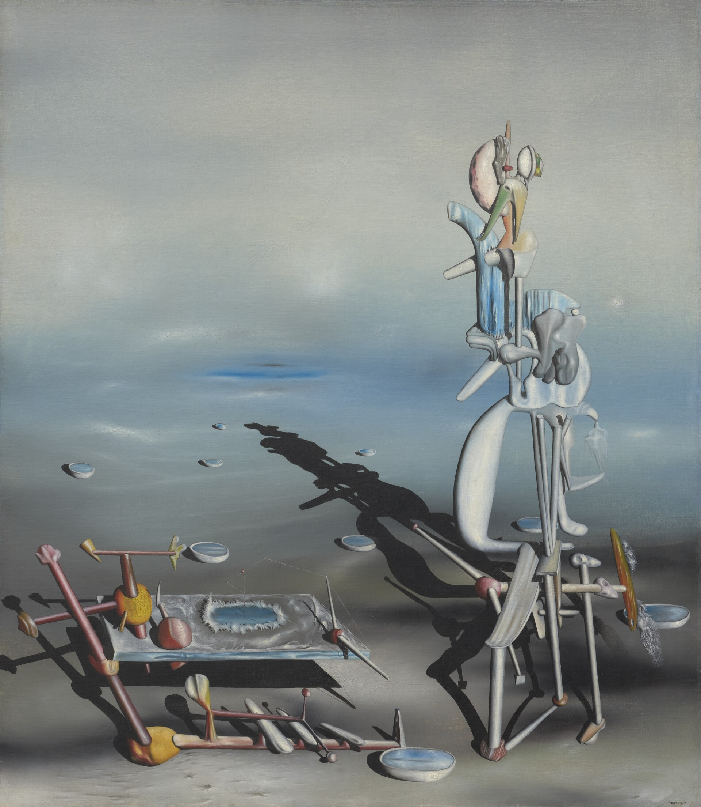
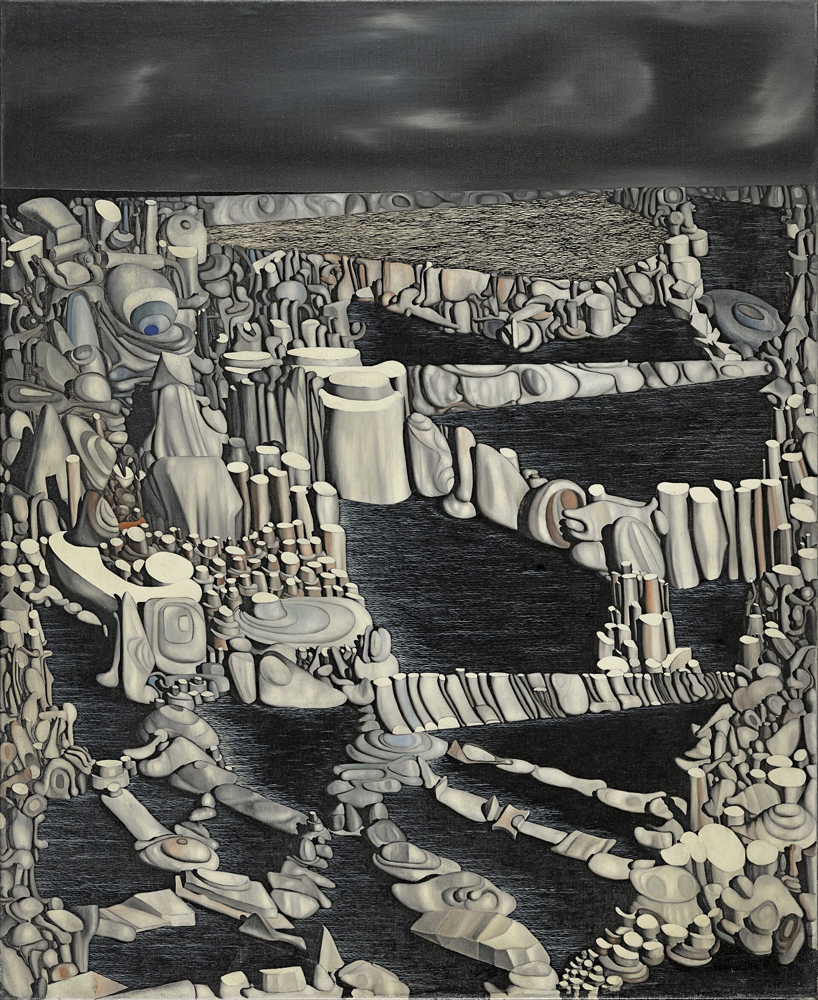

초현실주의
꿈과 무의식을, 현실보다 선명하게 그리다

빛의 제국L'Empire des lumières르네 마그리트 · 1956 환한 낮의 하늘 아래 가로등이 켜진 밤의 거리. 함께 있을 수 없는 두 시간이 한 화면에 놓인다.

어두운 정원Le Jardin sombre이브 탕기 · 1928 바다인지 땅인지 모를 어둠 속에, 이름 붙일 수 없는 형체들이 꿈처럼 떠 있다.

무한한 가분성Divisibilité indéfinie이브 탕기 · 1942 끝없는 평원 위, 뼈와 돌을 닮은 형상들이 긴 그림자를 드리운다. 무의식이 지은 풍경.

상상의 수Nombres imaginaires이브 탕기 · 1954 수없이 쌓인 돌 같은 형상들이 지평선까지 이어진다. 현실에는 없는, 꿈속에서만 셀 수 있는 수.